← Selected work
Case Study 03 · Product Strategy
Velocity Rewards MVP
Designing a petrol-retail rewards experience around the real rhythm of a fuel stop, with visible value, payment freedom, flexible redemption and intentional tipping.
01 · Product framing
A rewards programme customers cannot see or act on struggles to earn another visit.
The concept starts with a petrol-retail loyalty problem: card-based participation, low reward visibility and no simple digital way to tip fuel attendants. The opportunity was framed as an ecosystem, not just another app. It connects earning, redemption, payment freedom and the human service layer of the forecourt.
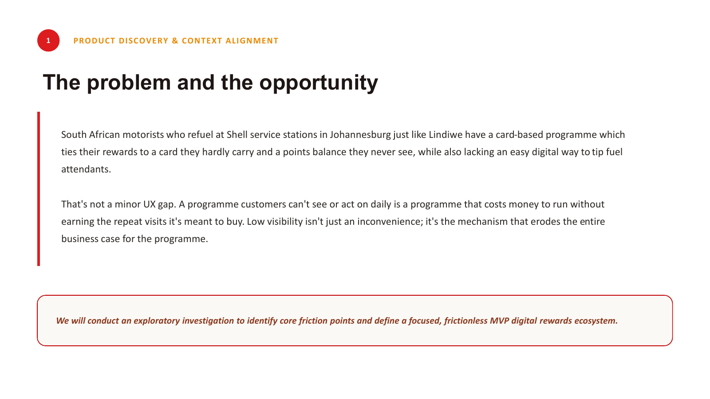
02 · Research method
When direct users are unavailable, be precise about the evidence you do have.
This was self-directed concept work without access to Shell users or stakeholders. Instead of pretending otherwise, I used a structured competitor and market audit across fuel, banking and adjacent high-frequency loyalty models. The findings are directional hypotheses, not validated user research.
Important constraint
Programme economics, including cash-out and points-funded tipping, were out of scope and would need modelling before a pilot.
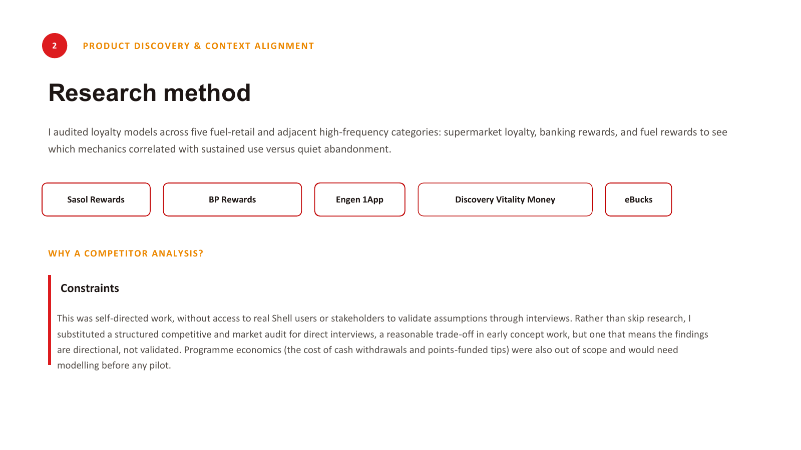
03 · Market signal
Visibility and flexibility only matter when customers can actually use them.
The audit across Sasol Rewards, BP Rewards, Engen 1App, Discovery Vitality Money, eBucks and Tappy pointed toward three strategic signals.
Invisible value gets abandoned
Low visibility into points and reward value was the clearest disengagement pattern.
Integrated tipping is distinctive
Tappy solves cashless tipping separately; the interesting bet is bringing tipping into the same loyalty journey.
Flexibility can still be friction
Partner catalogues and redemption choices lose value if thresholds and options are buried.
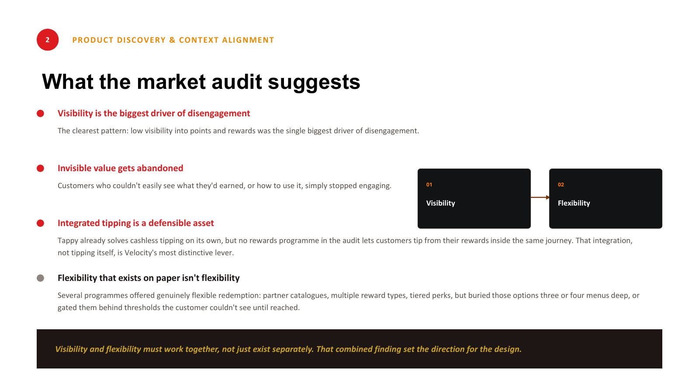
04 · Behavioural archetypes
Three hypotheses, one common theme: control.
Lindiwe wants tangible family value, Lesego wants speed without card juggling, and Jabulani wants a reliable way to thank attendants. These are hypothesis archetypes from the market audit, not interview-derived personas.
Balance- & value-conscious parent
Needs flexible redemption across real family spending and clear value conversion.
Time-pressed commuter
Will abandon anything that adds effort at the pump. Convenience and predictability dominate.
Regular, generous loyalist
Refuels frequently, values social connection and wants digital tipping without carrying cash.
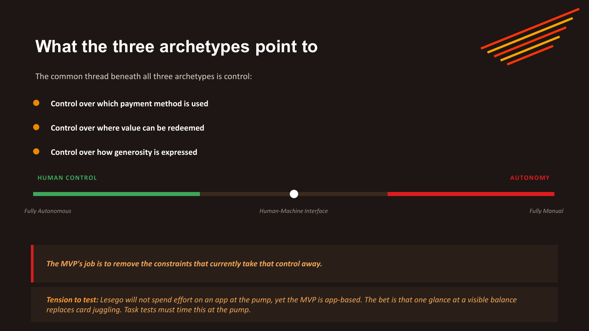
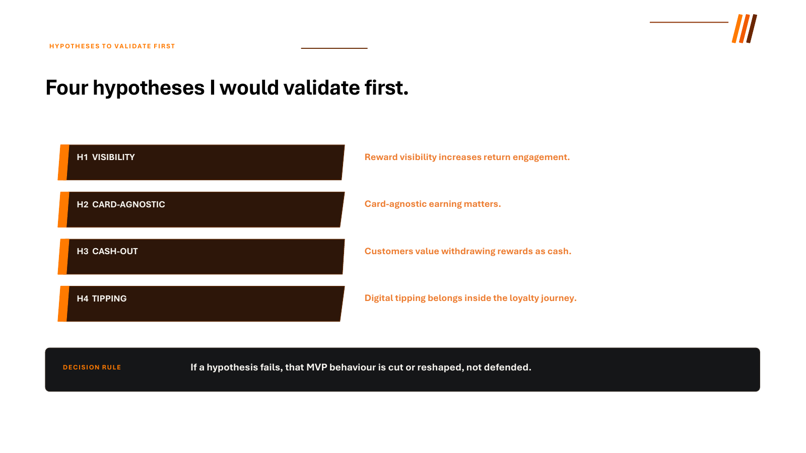
05 · Hypotheses
Four bets to validate before defending the MVP.
Visibility
Reward visibility increases return engagement.
Card-agnostic earning
Payment freedom matters to customers.
Cash-out
Customers value withdrawing rewards as cash.
In-journey tipping
Digital tipping belongs inside the loyalty journey.
Decision rule: if a hypothesis fails, the behaviour is cut or reshaped, not defended.
06 · MVP definition
The MVP is four behaviours, not a long feature list.
The filter was simple: if it does not help at the pump, it does not belong in the MVP.
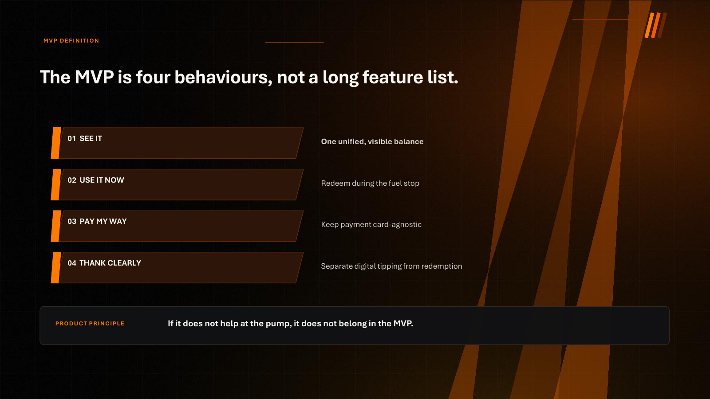
07 · Success model
Repeat engagement matters more than sign-up curiosity.
Sign-up rate was rejected as the primary measure. Redemption rate proves the mechanics work, but the stronger test is whether visible value and control change the reason to return.
Primary success lens
30/60-day return rate versus a pre-pilot baseline of current programme members.
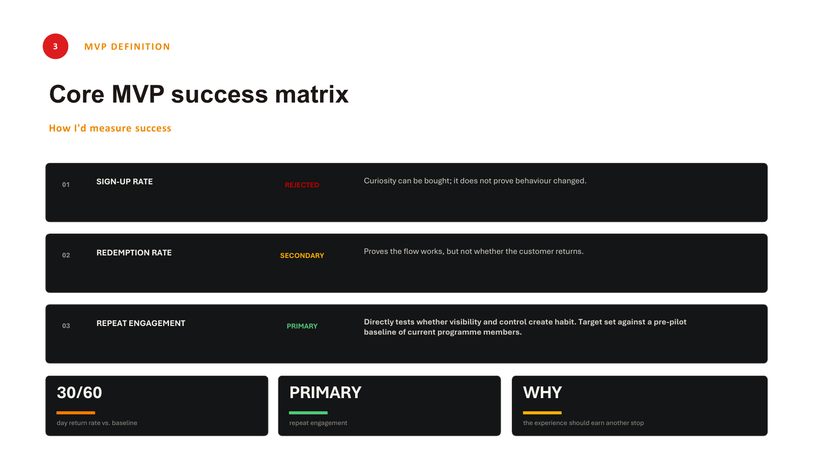
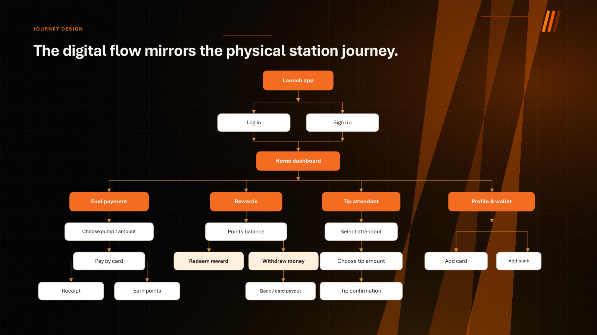
08 · Journey design
The digital flow mirrors the physical station journey.
The information architecture follows what customers actually do: launch or sign in, land on a home dashboard, then move into fuel payment, rewards, tipping or wallet management. Redemption and withdrawal branch from rewards; tipping branches into attendant selection, amount and confirmation.
Why mirror the forecourt?
A rewards layer should reduce cognitive switching, not create a second journey that competes with filling up.
09 · 32-screen prototype
Enough fidelity to test the whole value loop.
The prototype covers onboarding, rewards tracking, redemption, withdrawal, fuel payment, tipping and wallet management so the concept can be tested as an end-to-end experience rather than isolated screens.
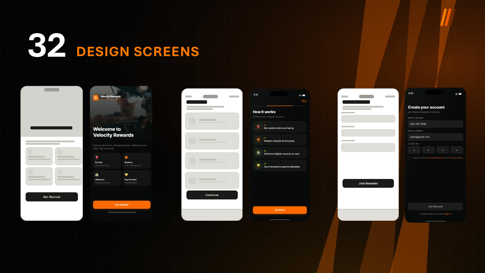
10 · Key design decisions
Each experience pillar rejects a tempting but weaker alternative.
One unified balance
Fuel and in-store purchases feed one visible points balance.
Rejected: separate fuel/shop wallets mirroring business structure.Real-time control
Redeem or withdraw close to the moment value is earned.
Rejected: distant thresholds, delayed rewards and restricted catalogues.Preserve freedom
Earning remains payment-agnostic so Shell stays at the centre of the loyalty relationship.
Rejected: a bank-linked or single-card qualification model.Make tipping explicit
Tipping has its own recipient, amount and confirmation.
Rejected: invisible gratuity or a purely transactional journey.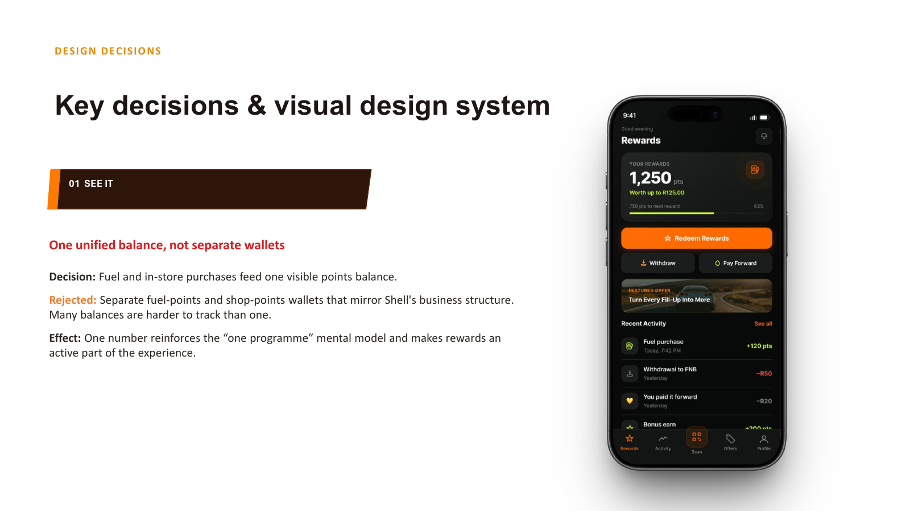
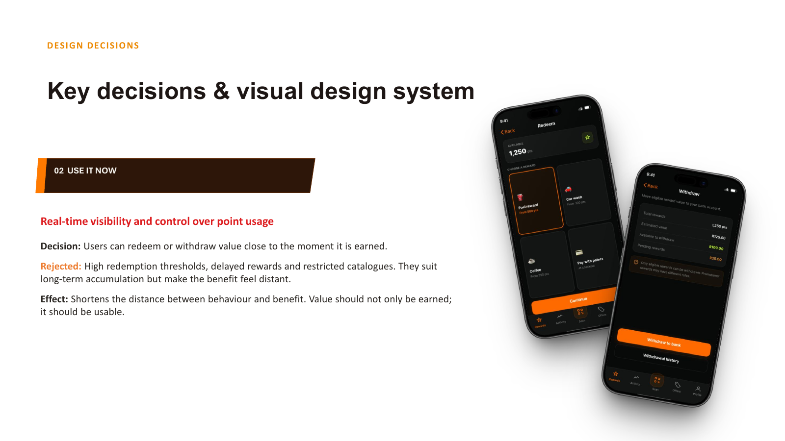
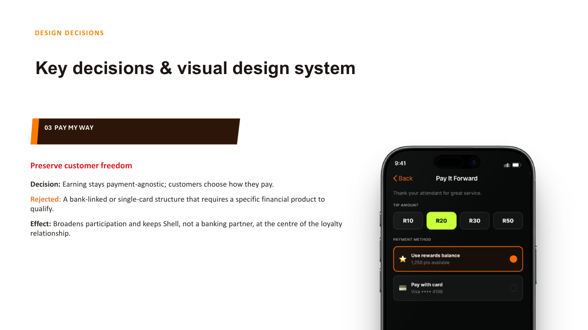
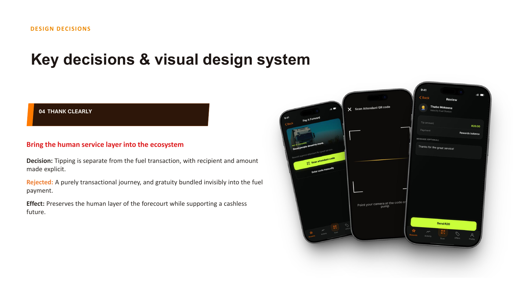
11 · Visual design system
A dark forecourt UI with a disciplined colour language.
Orange carries primary action and fuel-related moments; lime signals rewards and success; amber handles pending/warning states; error red is reserved for failures and debits. Inter keeps the UI legible and utilitarian.
Action OrangeReward LimeAmberErrorBackground
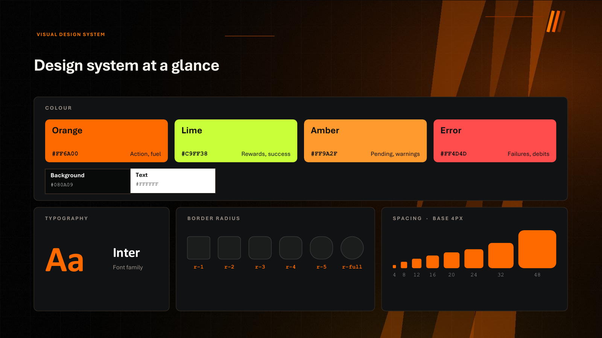
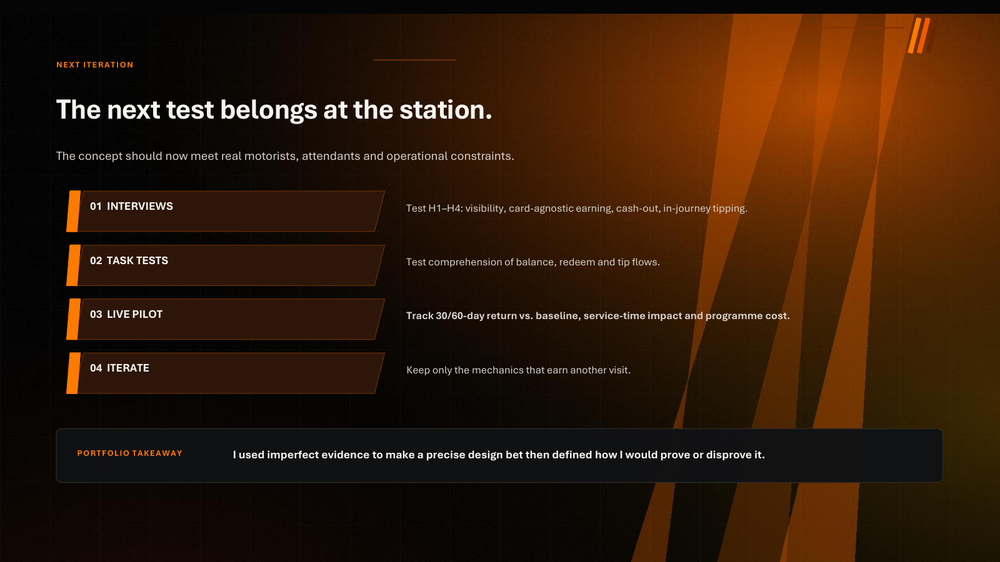
12 · Next iteration
The next test belongs at the station.
The concept should meet real motorists, attendants and operational constraints. I would interview against H1–H4, task-test balance/redeem/tip comprehension, then run a pilot that tracks return rate, service-time impact and programme cost.
Portfolio takeaway
I used imperfect evidence to make a precise design bet, then defined how I would prove or disprove it.
Want the complete 24-page case study?
Download the full deck with competitive audit, archetypes, MVP logic, flow, 32 screens and design decisions.
Download full case study ↓